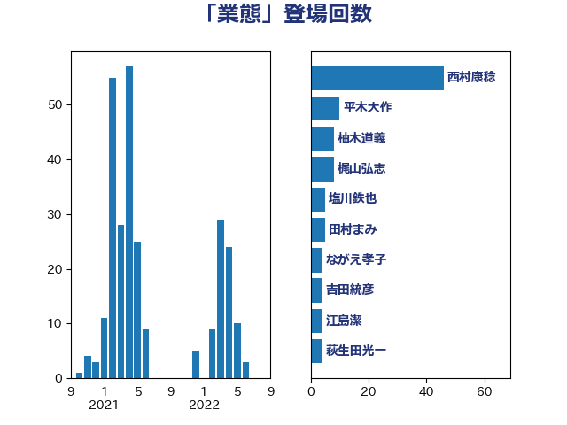

単語「業態」

| 西村康稔 | 自由民主党 | 46 回 |
| 平木大作 | 公明党 | 10 回 |
| 柚木道義 | 立憲民主党 | 8 回 |
| 梶山弘志 | 自由民主党 | 8 回 |
| 塩川鉄也 | 日本共産党 | 5 回 |
| 田村まみ | 国民民主党 | 5 回 |
| ながえ孝子 | 無所属 | 4 回 |
| 吉田統彦 | 立憲民主党 | 4 回 |
| 江島潔 | 自由民主党 | 4 回 |
| 萩生田光一 | 自由民主党 | 4 回 |
| 赤澤亮正 | 自由民主党 | 4 回 |
| 鈴木義弘 | 国民民主党 | 4 回 |
| 大岡敏孝 | 自由民主党 | 3 回 |
| 山田勝彦 | 立憲民主党 | 3 回 |
| 竹谷とし子 | 公明党 | 3 回 |
| 輿水恵一 | 公明党 | 3 回 |
| 馬場雄基 | 立憲民主党 | 3 回 |
| 井上信治 | 自由民主党 | 2 回 |
| 仁木博文 | 無所属 | 2 回 |
| 和田義明 | 自由民主党 | 2 回 |
| 大口善徳 | 公明党 | 2 回 |
| 斉藤鉄夫 | 公明党 | 2 回 |
| 末次精一 | 立憲民主党 | 2 回 |
| 浜口誠 | 国民民主党 | 2 回 |
| 浜野喜史 | 国民民主党 | 2 回 |
| 長坂康正 | 自由民主党 | 2 回 |
| 高橋千鶴子 | 日本共産党 | 2 回 |
| 下村博文 | 自由民主党 | 1 回 |
| 中司宏 | 日本維新の会 | 1 回 |
| 中川正春 | 立憲民主党 | 1 回 |
| 中野洋昌 | 公明党 | 1 回 |
| 井上英孝 | 日本維新の会 | 1 回 |
| 井原巧 | 自由民主党 | 1 回 |
| 伊佐進一 | 公明党 | 1 回 |
| 前原誠司 | 国民民主党 | 1 回 |
| 古賀之士 | 立憲民主党 | 1 回 |
| 古賀友一郎 | 自由民主党 | 1 回 |
| 土田慎 | 自由民主党 | 1 回 |
| 城井崇 | 立憲民主党 | 1 回 |
| 大島敦 | 立憲民主党 | 1 回 |
| 守島正 | 日本維新の会 | 1 回 |
| 宗清皇一 | 自由民主党 | 1 回 |
| 宮本周司 | 自由民主党 | 1 回 |
| 寺田学 | 立憲民主党 | 1 回 |
| 小林鷹之 | 自由民主党 | 1 回 |
| 山田美樹 | 自由民主党 | 1 回 |
| 山田賢司 | 自由民主党 | 1 回 |
| 山谷えり子 | 自由民主党 | 1 回 |
| 後藤茂之 | 自由民主党 | 1 回 |
| 新妻秀規 | 公明党 | 1 回 |
| 杉久武 | 公明党 | 1 回 |
| 枝野幸男 | 立憲民主党 | 1 回 |
| 柳本顕 | 自由民主党 | 1 回 |
| 森屋宏 | 自由民主党 | 1 回 |
| 榛葉賀津也 | 国民民主党 | 1 回 |
| 浅野哲 | 国民民主党 | 1 回 |
| 浦野靖人 | 日本維新の会 | 1 回 |
| 牧山ひろえ | 立憲民主党 | 1 回 |
| 田村憲久 | 自由民主党 | 1 回 |
| 田村智子 | 日本共産党 | 1 回 |
| 田村貴昭 | 日本共産党 | 1 回 |
| 白石洋一 | 立憲民主党 | 1 回 |
| 石井拓 | 自由民主党 | 1 回 |
| 石橋通宏 | 立憲民主党 | 1 回 |
| 茂木敏充 | 自由民主党 | 1 回 |
| 落合貴之 | 立憲民主党 | 1 回 |
| 西銘恒三郎 | 自由民主党 | 1 回 |
| 遠藤敬 | 日本維新の会 | 1 回 |
| 酒井庸行 | 自由民主党 | 1 回 |
| 鈴木俊一 | 自由民主党 | 1 回 |
| 鈴木敦 | 国民民主党 | 1 回 |
| 鎌田さゆり | 立憲民主党 | 1 回 |
| 阿部知子 | 立憲民主党 | 1 回 |
| 高木かおり | 日本維新の会 | 1 回 |
| 高野光二郎 | 自由民主党 | 1 回 |
| 麻生太郎 | 自由民主党 | 1 回 |